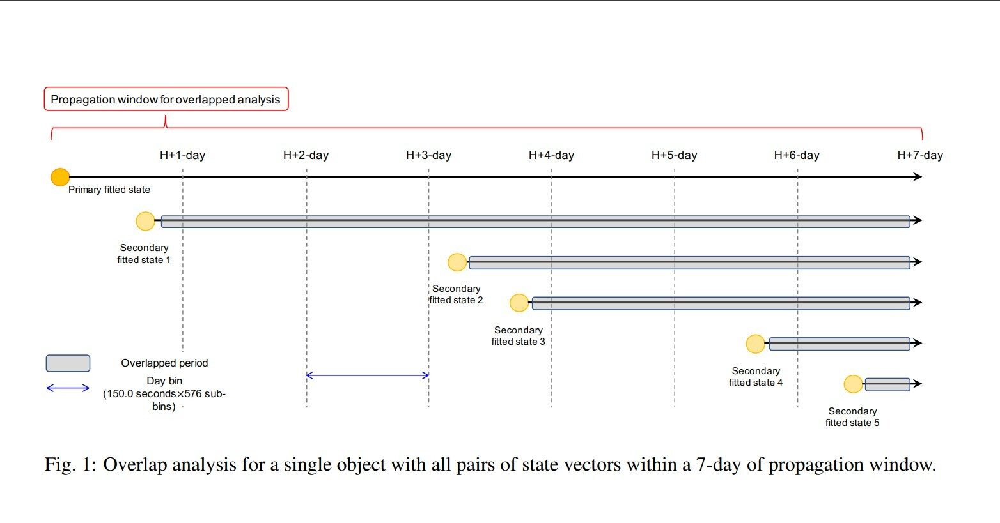
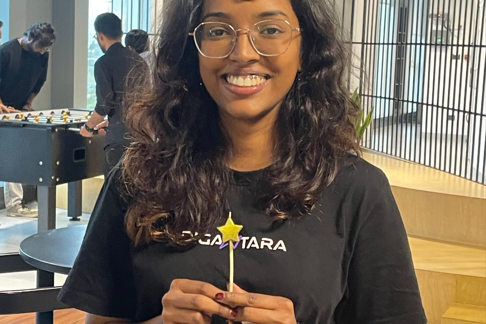

Astrodynamics Intern
- Validated orbit-state covariances from OPM ephemerides across LEO, MEO, and GEO regimes for precision orbit products.
- Propagated state vectors and covariance matrices using TLEs and OPM reference states, followed by an overlap analysis.
- Computed Mahalanobis distances between overlapping orbital states to evaluate covariance consistency and identify under- or over-dispersed uncertainty estimates.
- Developed a covariance-scaling methodology based on statistical discrepancies to improve uncertainty quantification for orbit determination and space situational awareness.

